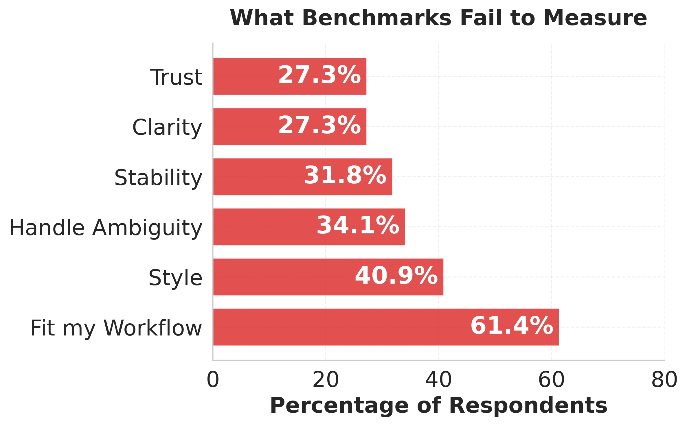
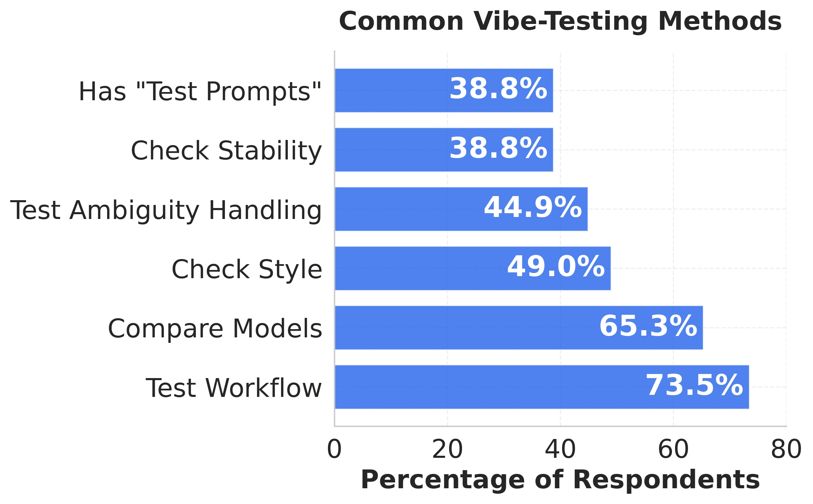
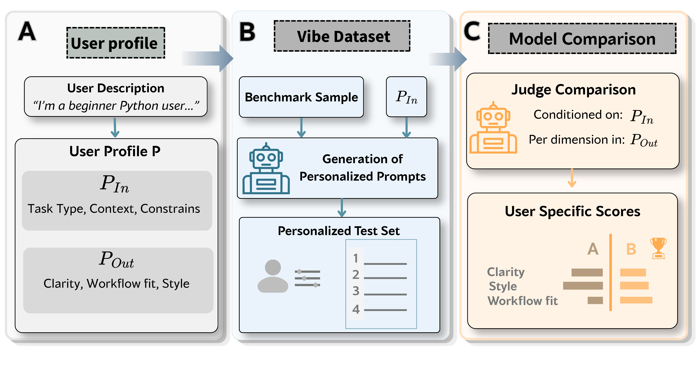
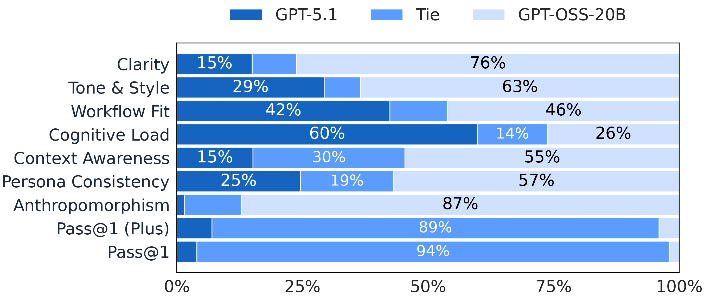
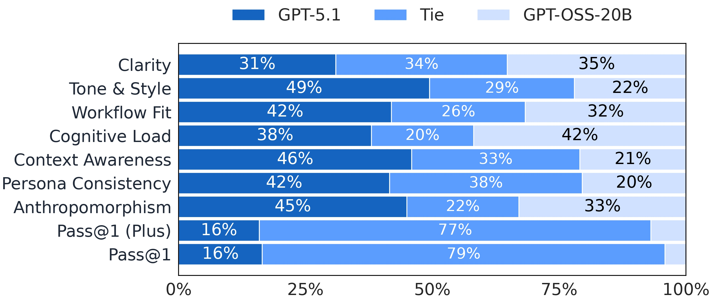

- Benchmark scores compress model behavior into a small number of standardized metrics.
- In practice, users care about qualities such as clarity, ambiguity handling, style fit, trust, and workflow compatibility.
- Those qualities are often tested through personalized prompts and judged qualitatively from the user's own perspective.
- As a result, practical model comparisons are informative but difficult to reproduce, compare, or analyze at scale.
Paper Webpage
From Feelings to Metrics: Understanding and Formalizing How Users VIBE-TEST LLMs
1Technion - Israel Institute of Technology · 2The Hebrew University of Jerusalem
Figure 1

An example vibe-test illustrating how users compare models on a concrete task and judge outputs using personal, workflow-relevant criteria.
TL;DR
Benchmark leaderboards are useful, but they often miss what matters during real use, so users turn to vibe-testing: manual workflow-based model comparison. In this work, we empirically study how vibe-testing happens in practice, formalize it as a two-part evaluation process, and propose a user-centered evaluation pipeline based on that formalization. The experiments show that personalizing both the prompt and the judgment criteria can change which model is preferred, laying the groundwork for more user-centered model evaluation.
Empirical grounding
Built from a user survey and in-the-wild comparison reports that show how people actually vibe-test models.
Two-part formalization
Vibe-testing is formalized through input dimensions for what users test and output dimensions for how they judge.
Evaluation pipeline
The paper proposes a modular pipeline that personalizes prompts and compares model outputs using user-aware criteria.
Abstract
Evaluating LLMs is challenging because benchmark scores often fail to capture models' real-world usefulness. Users therefore rely on vibe-testing: informal, experience-based comparisons on tasks that resemble their own workflows. This project studies how vibe-testing works in practice, formalizes it as a two-part process over input and output dimensions, and introduces a proof-of-concept evaluation pipeline for coding tasks. The pipeline personalizes prompts, runs head-to-head model comparisons, and judges responses using user-aware subjective criteria. Experiments on coding benchmarks show that when both prompt framing and response judgment are personalized, the preferred model can change relative to the original benchmark setting.
Why Benchmarks Miss Vibe
The paper starts from the gap between benchmark rankings and what users actually notice when working with models.
What The Paper Studies
To understand vibe-testing as a real-world evaluation practice, the paper first examines it empirically before proposing structure and automation.
- A survey of user evaluation practices identifies what people think benchmarks fail to capture and how they test models instead.
- An in-the-wild corpus of model comparison reports from blogs, forums, tech articles, and social media reveals recurring testing and judging patterns.
- Together, these sources motivate a formal framework and a downstream evaluation pipeline for systematic study.
Figure 2


Survey results showing what users think benchmarks miss and the methods they use when vibe-testing models in practice.
Formalizing Vibe-Testing
The paper frames vibe-testing as a two-part process: users personalize what they test, and they personalize how they judge model outputs.
Input Dimensions
What users test
Input dimensions describe how prompts are shaped to reflect a user's context. In the coding setting, this includes task framing, real-world workflow details, the amount of context supplied, and the type of constraints the user cares about.
Output Dimensions
How users judge responses
Output dimensions describe what makes a response feel useful from the user's perspective, such as clarity, style fit, workflow fit, ambiguity handling, and other subjective properties that are rarely captured by standard benchmarks.
This formalization turns vibe-testing into something reproducible: it separates how users shape test inputs from how they interpret outputs, creating the basis for a modular evaluation pipeline rather than an ad hoc comparison habit.
Pipeline Overview
Figure 3 in the paper presents the pipeline as three connected parts. The implementation in this repository expands each part into modular scripts and analysis stages, but the public-facing overview is best understood through the paper's A / B / C structure.
A
User profiling
Convert a short natural-language user description into a structured profile that captures both input preferences and output preferences.
B
Vibe dataset construction
Rewrite benchmark prompts into personalized variants aligned with the user's input dimensions, while checking that the task intent and ground truth are preserved.
C
Model comparison
Evaluate correctness and compare two model outputs head to head using the user's output dimensions, producing per-dimension and overall preference signals.
Figure 3

The automatic vibe-testing pipeline: user profiling, vibe dataset construction, and model comparison in one A/B/C workflow.
Head-to-Head Results
The paper's central experimental claim is not only that personalization matters, but that it can materially change preference orderings between models.
- Personalized prompts and user-aware judgment can reverse which model is preferred in head-to-head evaluations.
- Neutral control paraphrases mostly preserve the ordering seen under original benchmark prompts.
- This suggests that benchmark prompts can mask user-relevant differences in clarity, style, workflow fit, and related subjective dimensions.
Figure 4


Head-to-head comparison results under original and personalized prompts, showing how personalization can shift model preferences across subjective dimensions.
Key Contributions
Empirical Study
Grounding in real user behavior
The work studies vibe-testing through a survey of user practices and a corpus of real-world comparison reports, rather than treating personalized evaluation as a purely speculative idea.
Formalization
A structure for reproducibility
Vibe-testing is decomposed into reusable input dimensions and output dimensions, making informal model comparison easier to analyze and reproduce systematically.
Automation
A full evaluation pipeline
The paper proposes a modular pipeline that personalizes prompts, compares models head to head, and turns user-aware evaluation into a reproducible research setup.
Finding
Preferences can flip under personalization
In coding benchmark experiments, tailoring both prompt framing and judgment criteria can change which model is preferred, while control paraphrases mostly preserve the original ordering.
Citation
@misc{itzhak2026feelingsmetrics,
title = {From Feelings to Metrics: Understanding and Formalizing How Users VIBE-TEST LLMs},
author = {Itay Itzhak and Eliya Habba and Gabriel Stanovsky and Yonatan Belinkov},
year = {2026},
note = {Under review},
howpublished = {\url{https://arxiv.org/abs/2604.14137}}
}